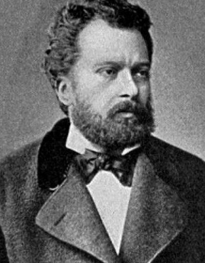

Halide Edib Adıvar
Türk yazarı ve akademisyen. İstanbul Üniversitesi'nde edebiyat profesörü. Memleket Hikayeleri ve Gurbet Hikayeleri gibi eserleriyle tanınır.
Ateşten Gömlek
Sinekli Bakkal
Ömer Seyfettin
Türk yazarı, öykü ve roman yazarı. Olay hikayesi türünde eserler vermiştir. Kısa hikayeciliğinin Türk edebiyatında önemli isimlerindendir.
Kaşağı
Efruz Bey

Sabahattin Ali
Türk yazarı, öğretmen ve gazeteci. Roman, öykü, şiir ve tiyatro türlerinde eserler vermiştir. Kuyucaklı Yusuf, İçimizdeki Şeytan, Değirmen gibi eserleriyle tanınır.
Kürk Mantolu Madonna
İçimizdeki Şeytan

Namık Kemal
Türk şair, yazar ve siyasetçi. Tanzimat dönemi edebiyatının önde gelen isimlerindendir. İntibah ve Cezmi gibi eserleriyle bilinir.
İntibah
Cezmi

Sait Faik Abasıyanık
Türk öykü yazarı. Sait Faik Hikayeleri adlı eseriyle tanınır. Doğa ve insan ilişkisini işlediği eserleriyle edebiyat dünyasında etkili olmuştur.
Semaver
Lüzumsuz Adam
Mehmet Akif Ersoy
Türk şair, yazar, akademisyen ve milli mücadele kahramanı. "İstiklal Marşı"nın yazarı olarak tanınır.
Safahat
İstiklal Marşı
Peyami Safa
Türk yazarı, romancı ve gazeteci. Dokuzuncu Hariciye Koğuşu, Yalnızız gibi eserleriyle tanınır.
Dokuzuncu Hariciye Koğuşu
Yalnızız
Reşat Nuri Güntekin
Türk romancı ve oyun yazarı. Çalıkuşu, Yeşil Gece gibi eserleriyle tanınır.
Çalıkuşu
Yeşil Gece
Orhan Kemal
Türk romancı. Murtaza, Ekmek Kavgası Üzerinde gibi eserleriyle tanınır.
Murtaza
Ekmek Kavgası